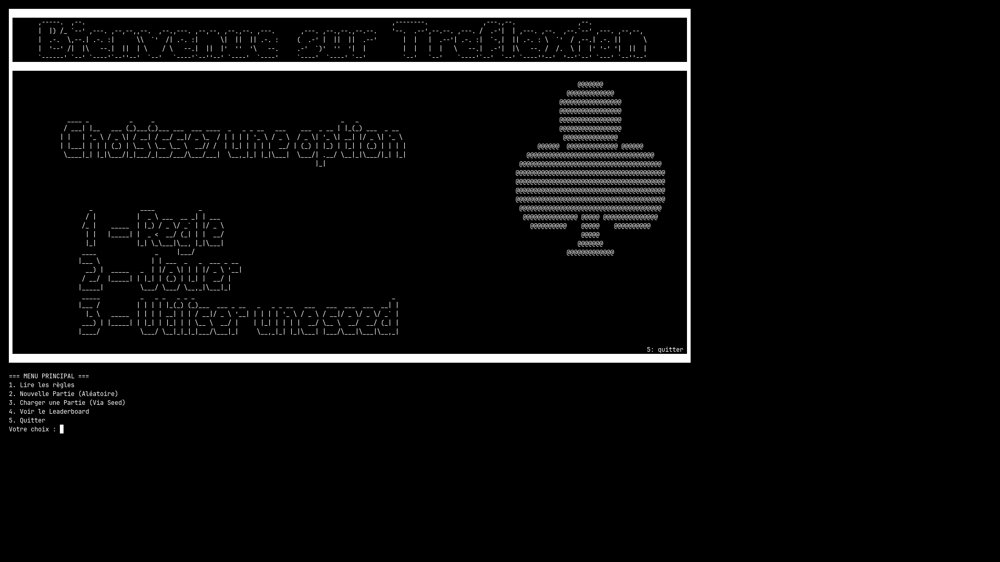
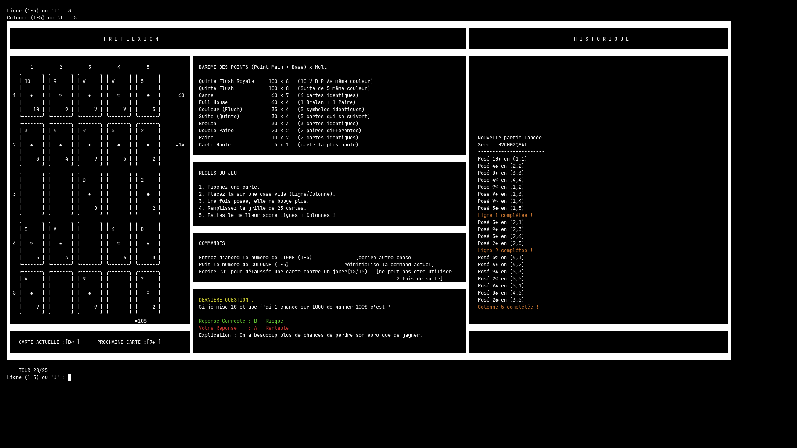

Optimiser des applications informatiques — Conception et développement complet d'un jeu de stratégie ludo-pédagogique en Java, réalisé en binôme avec Baptiste MORIN.


Tréflexion est un jeu de réflexion stratégique développé en Java (environnement iJava) dans le cadre conjoint des SAÉ 1.01 et 1.02. Le principe est inspiré du poker : le joueur doit placer 25 cartes, une par une, sur une grille de 5 colonnes et 5 lignes, en cherchant à former les meilleures combinaisons possibles (paires, brelans, suites, couleurs, full house, carré, quinte flush) sur chacune des 10 rangées évaluées à la fin de la partie.
La contrainte centrale du jeu est son irréversibilité : une carte posée ne peut jamais être déplacée. Cette règle oblige le joueur à anticiper sur le long terme plutôt que de jouer de façon purement opportuniste. Un système de « Jokers pédagogiques » enrichit l'expérience : en répondant correctement à une question de culture générale ou de mathématiques — chargée dynamiquement depuis un fichier CSV externe — le joueur peut défausser la carte courante et piocher la suivante sans la poser.
Techniquement, l'interface est entièrement réalisée en ASCII Art avec des templates et un positionnement
précis du curseur dans le terminal, reproduisant fidèlement les symboles et valeurs des cartes à jouer
(♠ ♥ ♦ ♣). Chaque partie est identifiée par un Seed numérique unique permettant de rejouer exactement la
même distribution. Le code source est couvert par un script de tests automatisés (test.sh)
validant les fonctions de détection de combinaisons.
Ce projet a été réalisé en binôme avec Baptiste MORIN via un dépôt Git commun. La répartition des tâches a suivi une logique de complémentarité : Baptiste sur la logique de scoring et la détection des mains de poker, moi sur l'interface ASCII Art, le système de Seed et les Jokers pédagogiques. Des réunions hebdomadaires assuraient la cohérence de l'ensemble et l'intégration continue des modules.
Formule : (Base + Main) × Multiplicateur — évalué sur les 10 rangées (5 lignes + 5 colonnes) :
| Combinaison | Base | × |
|---|---|---|
| Quinte Flush Royale | 100 | 8 |
| Quinte Flush | 100 | 8 |
| Carré | 60 | 7 |
| Full House | 40 | 4 |
| Couleur (Flush) | 35 | 4 |
| Combinaison | Base | × |
|---|---|---|
| Suite (Straight) | 30 | 4 |
| Brelan | 30 | 3 |
| Double Paire | 20 | 2 |
| Paire | 10 | 2 |
| Carte Haute | 5 | 1 |
Tréflexion est le projet du Semestre 1 qui m'a le plus marqué, tant par sa complexité technique que par sa richesse humaine. Sur le plan algorithmique, implémenter la détection de toutes les mains de poker — de la simple paire à la quinte flush royale — a représenté un véritable défi : chaque combinaison doit être formalisée en critères précis, testés exhaustivement pour éviter faux positifs et mains non détectées. Plusieurs versions ont été nécessaires avant d'obtenir un moteur de scoring fiable et cohérent.
Travailler en binôme avec Baptiste a été une expérience formatrice à part entière. J'ai compris en pratique pourquoi les conventions de code et les commentaires ne sont pas des détails accessoires : lire le code de quelqu'un d'autre sans explication verbale révèle immédiatement les zones d'ombre. Nous avons adopté assez tôt une discipline de nommage commune et des fonctions à responsabilité unique, ce qui a facilité l'intégration de nos modules respectifs.
L'idée des Jokers pédagogiques est celle dont je suis le plus fier. Elle incarne la mission d'un IUT : créer des systèmes qui allient utilité technique et valeur éducative. Voir des camarades jouer à Tréflexion et chercher à maximiser leur score a été une source de fierté et de motivation pour la suite du cursus.
Si c'était à refaire, je consacrerais davantage de temps à la phase de conception (diagramme des classes, contrat de chaque fonction) avant d'écrire la première ligne de code. Nous avons dû refactoriser plusieurs parties faute d'une architecture initiale suffisamment modulaire. C'est une leçon que j'applique systématiquement depuis.